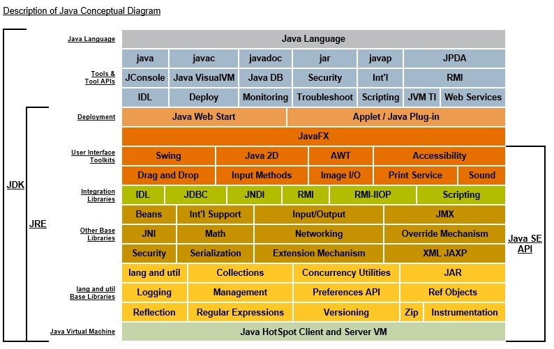
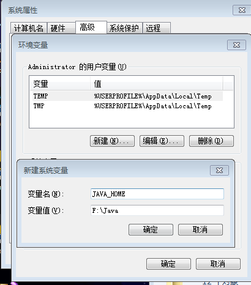
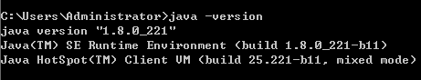
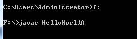
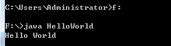
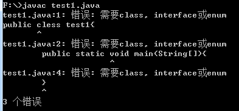

一、常用的DOS命令
1.打开cmd
窗口键+r --> 输入cmd --> 确认
2.常用的dos命令
dir：列出当前目录下的所有文件及文件夹
md：创建一个新的目录
rd：删除目录
cd：进入指定目录
cd..：退回到上一级目录
cd\：退回到根目录
del：删除文件但不删除目录
exit：退出DOS命令行
二、Java语言的运行机制
Java语言的特点：
1.面向对象
两个基本概念：类、对象
三大特性：封装、继承、多态
2.健壮性 完善性
强交互语言
3.跨平台性
jvm
4.两种核心机制
Java虚拟机（Java Virtal Machine） JVM
垃圾回收装置（Garbage Collection） GC
三、Java语言的环境搭建
1.下载安装JDK
官方网址：https://www.oracle.com/technetwork/java/javase/downloads/index.html
Oracle账号：2696671285@qq.com password：Oracle123

2.配置环境变量
1.设置JAVA_HOME
解压jdk的目录
2.设置CLASSPATH
.;%JAVA_HOME%\lib\dt.jar;%JAVA_HOME%\lib\tools.jar
3.在path中加入两个新的配置
%JAVA_HOME%\bin
%JAVA_HOME%\jre\bin

3.验证是否安装成功
打开cmd，使用java -version查看版本号

四、Hello World!
1.将java代码编写到扩展名为.java的文件中
public class HelloWorld {
public static void main(String[] args) {
System.out.println("Hello World");
}
}2.通过DOS命令的javac命令对该文件进行编译（此处遇到错误1）

3.通过Java命令对生成的class文件进行运行

五、注释
单行注释 //
多行注释 /**/
文档注释 /***注释*/
小结
1.在创建java文件时，文件名需与类名一致。
2.public static void main为固定格式，main 是一个程序的入口，一个 java 程序运行必须而且有且仅有一个 main 方法。
问题：在用javac编译时遇到错误1，具体如图

自己编写hello world时，出现错误1，使用网上的代码复制粘贴时则可以正常编译。之后删除原来的HelloWorld.java后，重新新建一个，并以ANSI编码格式保存，则没有出现此问题。
通过其他博客得知，此问题的出现主要是因为在编写程序时使用了UTF-8编码格式，此格式会出现BOM头的问题（原本默认的txt编码格式应该是ANSI）。
关于文件 BOM 头的问题
当使用类似 WINDOWS 自带的记事本等软件，在保存一个以UTF-8编码的文件时，会在文件开始的地方插入三个不可见的字符（0xEF 0xBB 0xBF，即BOM）。它是一串隐藏的字符，用于让记事本等编辑器识别这个文件是否以UTF-8编码。但是java源代码中不可以由BOM，javac无法识别，会出现乱码。
//BOM（byte-order mark），即字节顺序标记，它是插入到以UTF-8、UTF16或UTF-32编码Unicode文件开头的特殊标记，用来识别Unicode文件的编码类型。对于UTF-8来说，BOM并不是必须的，因为BOM用来标记多字节编码文件的编码类型和字节顺序（big-endian或little-endian）。在绝大多数编辑器中都看不到BOM字符，因为它们能理解Unicode，去掉了读取器看不到的题头信息。若要查看某个Unicode文件是否以BOM开头，可以使用十六进制编辑器。
参考资料来源： https://blog.csdn.net/AITECH/article/details/79981091
https://blog.csdn.net/a66731167/article/details/81286537